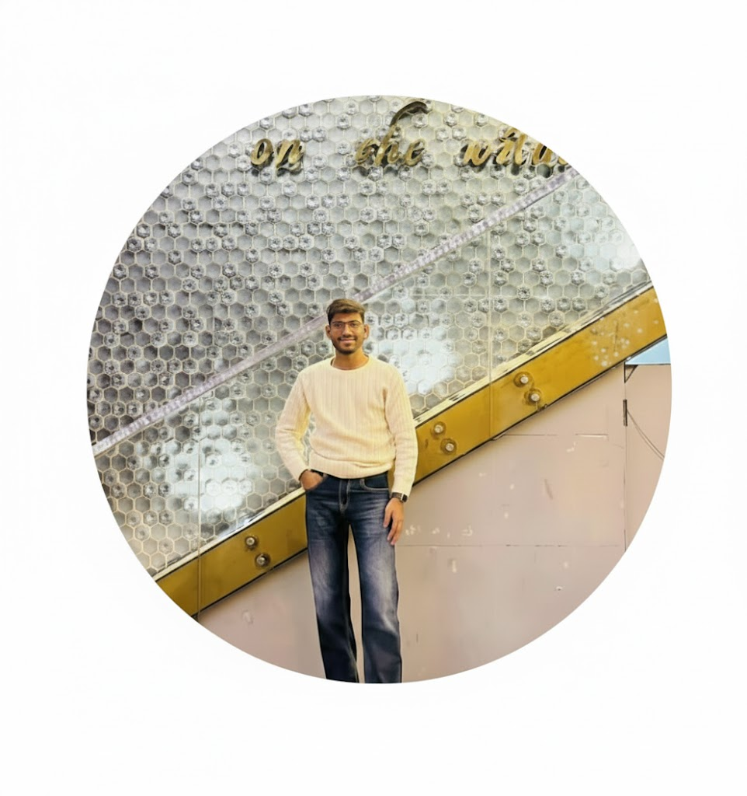

Meet Saurav Jhawar
The journey of Chill Thrive began with a simple observation: in a world that never stops moving, we have forgotten how to truly recover. Saurav founded this brand after discovering the profound impact of cold immersion on his own mental clarity.
Our vision is to redefine wellness in Surat by making recovery as essential as the workout itself. We bridge the gap between rigorous recovery science and a premium lifestyle.
"Recovery is not a luxury; it is the foundation of resilience. At Chill Thrive, we help you reset so you can return stronger."
Our Mission
To provide Surat with a premium recovery experience that balances science and lifestyle, empowering every individual to reach their peak state.
Scientific Excellence
Proven recovery protocols for real results.
Mental Resilience
Building toughness through cold immersion.
Premium Standards
We maintain medical-grade hygiene and elite service in every session, ensuring a safe and luxury reset for your body.